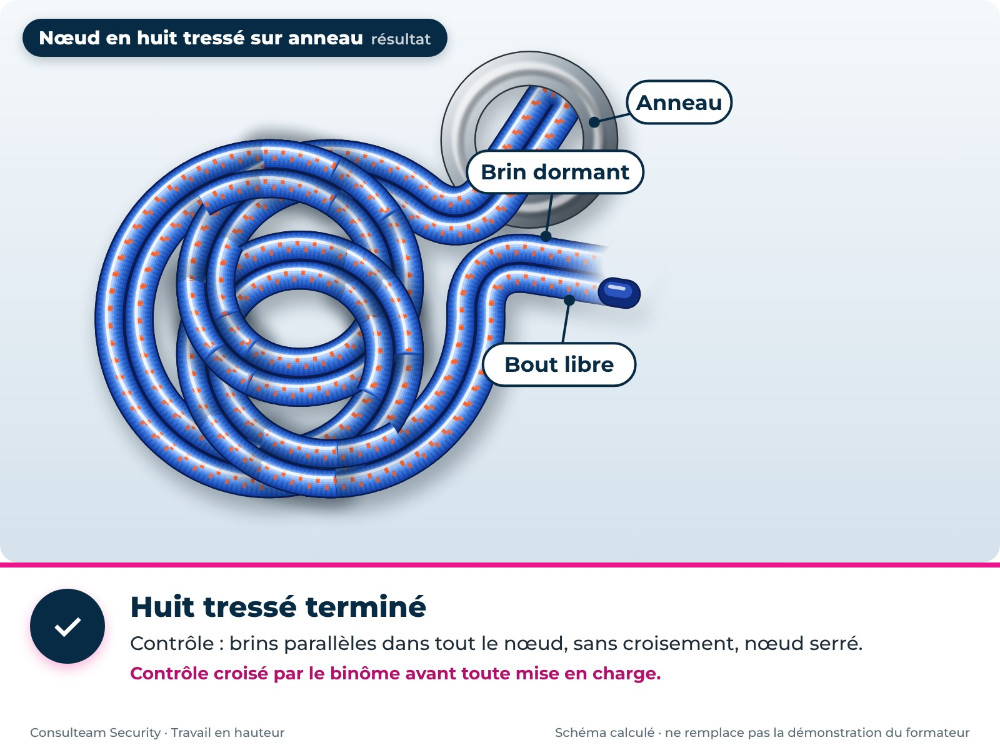
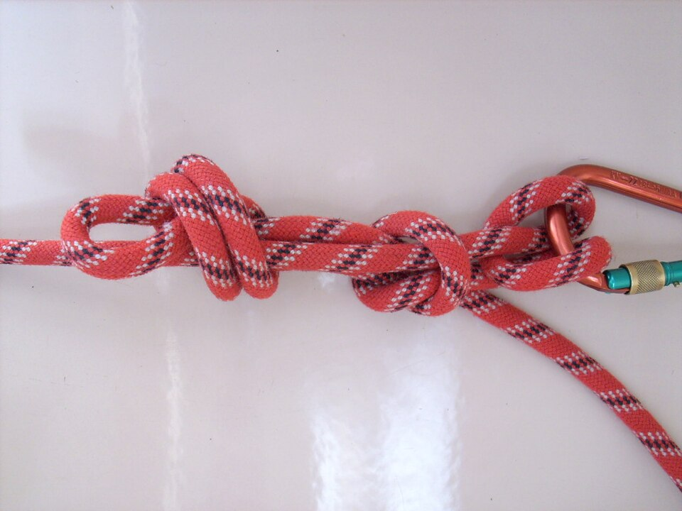
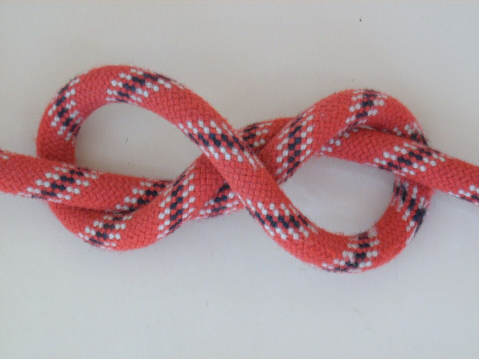
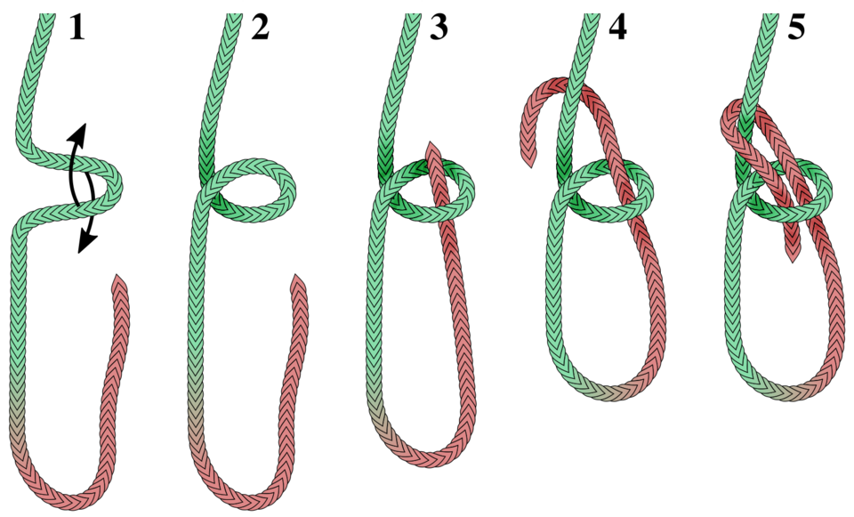
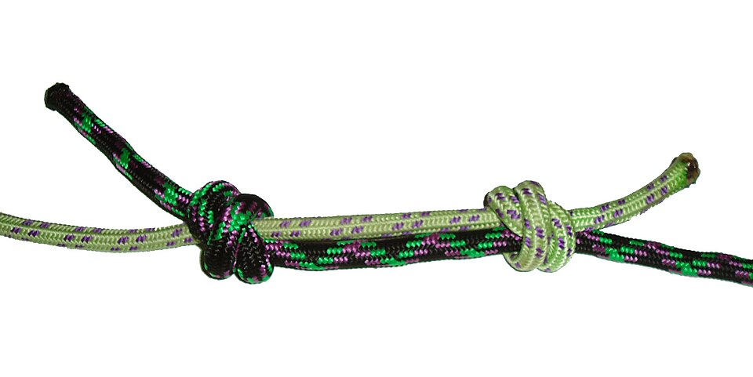
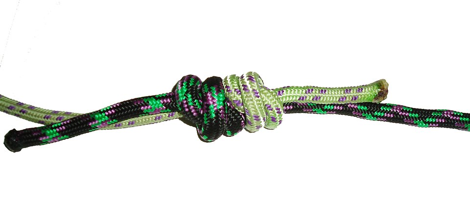
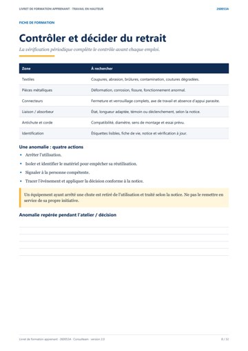
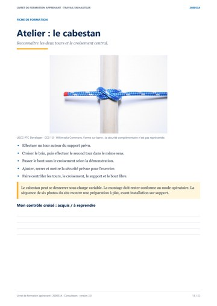

Livret de formation apprenant · 260053A
Travail en hauteur
et port du harnais
Prévenir · contrôler · pratiquer · préparer le secours
Avant de commencer
Mon livret de formation
Observer la situation, choisir la prévention, contrôler avant de s’engager.
Session 260053A · SECU37 · lundi 30 novembre 2026 · 7 heures · Consulteam Security, La Seyne-sur-Mer.
Ce livret accompagne les exercices et les démonstrations. Il ne constitue ni une autorisation de travail, ni une qualification de cordiste, ni une validation d’un montage antichute.
Objectifs de la journée
- Repérer les risques de chute et les conditions d’accès au poste.
- Donner la priorité à la suppression du risque puis aux protections collectives.
- Choisir, contrôler et ajuster les EPI selon les notices.
- Comprendre ancrage, tirant d’air, pendule et organisation des secours.
- Réaliser les exercices d’ancrage et de nœuds prévus, sous contrôle du formateur.
Comment travailler avec ce livret
Lire la fiche, observer la démonstration, réaliser au sol, faire contrôler, puis noter ce qui s’applique à son poste. Les animations, vidéos et détails des sources restent accessibles sur la plateforme.
Nom / entreprise / poste / attentes
Sommaire
Le parcours en un regard
Un repère pour retrouver les fiches et préparer la mise en pratique.
| Séquence | Contenu |
|---|---|
| Avant de monter | Méthode · réglementation · choix du système |
| Préparer le matériel | Harnais · contrôles · connecteurs · ancrage |
| Préparer le déplacement | Tirant d’air · pendule · continuité de protection |
| Atelier au sol | Huit · cabestan · demi-cabestan et mule · approfondissement |
| Anticiper et vérifier | Cordes · secours · cas pratiques · auto-évaluation |
| Après la formation | Plan d’action · notes · sources et crédits |
Trois questions avant chaque intervention
- Puis-je réaliser la tâche depuis une zone sûre ?
- Quelles protections empêchent réellement la chute ?
- Si une chute se produit malgré tout, le système et le secours sont-ils adaptés ?
Un doute sur un équipement, un ancrage ou une procédure impose d’arrêter et de demander. Une note de criticité basse ne compense jamais une protection manquante.
Les situations de mon activité à examiner
Fiche de formation
Prévenir avant de s’équiper
L’équipement individuel s’intègre dans une organisation de travail.
| Étape | Ce que je recherche |
|---|---|
| 1 · Définir | Tâche, durée, outils, manutentions et déplacements nécessaires. |
| 2 · Repérer | Bords, trémies, surfaces fragiles, obstacles, tiers et coactivité. |
| 3 · Évaluer | Sol, météo, visibilité, accès et contraintes de l’environnement. |
| 4 · Choisir | Poste sûr, accès adapté et protection collective. |
| 5 · Organiser | Système individuel si nécessaire, mode opératoire et secours. |
La hiérarchie à conserver
- Supprimer le travail en hauteur ou déplacer l’opération au sol quand c’est possible.
- Prévoir un poste et un accès sûrs ; privilégier la protection collective.
- Employer un système individuel approprié lorsque la protection collective ne peut pas être mise en œuvre.
- Informer, former, vérifier et prévoir une intervention de secours.
Situation à discuter
Une intervention courte est prévue près d’une trémie non protégée. La durée limitée ne supprime pas le risque : quelles mesures permettent de réaliser le travail sans exposition ?
Mes mesures de prévention
Fiche de formation
Les exigences à connaître
Relier les règles au choix concret du poste et du matériel.
| Référence | Conséquence pratique |
|---|---|
| L. 4121-1 et L. 4121-2 | L’employeur organise la prévention ; la protection collective est prioritaire. |
| R. 4323-58 à R. 4323-61 | Poste sûr et ergonomique. Si la protection collective est impossible : système d’arrêt de chute approprié, travailleur jamais seul et notice de l’employeur. |
| R. 4323-61 | Chute libre ne dépassant pas 1 m, ou effets d’une chute de plus grande hauteur limités de façon équivalente. |
| R. 4323-68 | Pas de travaux temporaires en hauteur si les conditions météo ou l’environnement compromettent la sécurité. |
| Arrêté du 19 mars 1993 | Vérification périodique des systèmes antichute datant de moins de douze mois ; raccourcir l’intervalle si nécessaire. |
Il n’existe pas de hauteur minimale générale qui dispenserait d’évaluer le risque de chute d’un niveau à un autre.
Ce que je dois connaître sur mon site
- La consigne et les limites d’intervention.
- Les personnes compétentes, les ancrages autorisés et le mode opératoire.
- L’organisation d’alerte, de sauvetage et d’évacuation.
Consignes et interlocuteurs de mon entreprise
Fiche de formation
Trois systèmes, trois objectifs
Identifier ce que le système doit accomplir avant de le choisir.
| Système | Objectif | Point de vigilance |
|---|---|---|
| Retenue | Empêcher d’atteindre la zone de chute. | Longueur et cheminement empêchent réellement l’accès au bord. |
| Maintien au poste | Travailler en appui ou en position définie. | Selon le risque, prévoir en plus un système distinct d’arrêt de chute. |
| Arrêt de chute | Arrêter une chute et retenir la personne. | Harnais, liaison, ancrage, espace libre et secours adaptés ensemble. |
Le système complet
La compatibilité se vérifie pour l’ensemble : harnais, liaison, connecteurs, antichute, support et ancrage. Le marquage d’un élément ne valide pas leur combinaison.
| Repères usuels | Fonction |
|---|---|
| EN 361 | Harnais antichute |
| EN 358 | Maintien au travail et retenue |
| EN 355 | Absorbeur d’énergie |
| EN 362 | Connecteurs |
Une ceinture ou un point de maintien n’est pas automatiquement un point d’arrêt de chute. Les points de connexion et les combinaisons autorisées se lisent dans la notice.
Quel système pour mon exercice ? Pourquoi ?
Fiche de formation
Ajuster le harnais
L’ajustement se vérifie avec la notice du modèle réellement utilisé.
- Identifier le harnais, son marquage, sa taille et sa notice.
- Examiner sangles, coutures, boucles et points d’attache avant de l’enfiler.
- Enfiler sans vrille ; fermer chaque boucle selon son mécanisme.
- Régler les sangles pour obtenir le maintien prévu, sans gêner les mouvements.
- Identifier les points d’arrêt de chute et les distinguer des points de maintien.
- Connecter uniquement aux points et selon les configurations autorisées.
- Faire contrôler l’ajustement et les connexions par le binôme.
Le contrôle croisé est observable
| Je montre | Mon binôme vérifie |
|---|---|
| Chaque fermeture | Fermeture complète et verrouillage prévu. |
| Chaque sangle | Absence de vrille et réglage conforme. |
| Le point connecté | Fonction prévue par la notice et bon cheminement. |
Le port d’un harnais ne suffit pas à protéger : il faut un système approprié et une procédure d’utilisation.
Modèle utilisé / réglages / points de vigilance
Fiche de formation
Contrôler et décider du retrait
La vérification périodique complète le contrôle avant chaque emploi.
| Zone | À rechercher |
|---|---|
| Textiles | Coupures, abrasion, brûlures, contamination, coutures dégradées. |
| Pièces métalliques | Déformation, corrosion, fissure, fonctionnement anormal. |
| Connecteurs | Fermeture et verrouillage complets, axe de travail et absence d’appui parasite. |
| Liaison / absorbeur | État, longueur adaptée, témoin ou déclenchement, selon la notice. |
| Antichute et corde | Compatibilité, diamètre, sens de montage et essai prévu. |
| Identification | Étiquettes lisibles, fiche de vie, notice et vérification à jour. |
Une anomalie : quatre actions
- Arrêter l’utilisation.
- Isoler et identifier le matériel pour empêcher sa réutilisation.
- Signaler à la personne compétente.
- Tracer l’événement et appliquer la décision conforme à la notice.
Un équipement ayant arrêté une chute est retiré de l’utilisation et traité selon la notice. Ne pas le remettre en service de sa propre initiative.
Anomalie repérée pendant l’atelier / décision
Fiche de formation
Choisir l’ancrage
Distinguer le dispositif d’ancrage, son support et l’installation.
- Identifier l’ancrage prévu par le mode opératoire.
- Vérifier le support, l’installation et les limites d’utilisation.
- Tenir compte du nombre d’utilisateurs et du sens des efforts.
- Vérifier la compatibilité des connecteurs et éviter les arêtes et appuis parasites.
- Placer l’ancrage pour limiter la chute et l’effet pendulaire, selon la configuration autorisée.
Un contrôle ne remplace pas l’autre
| Ce que je vois | Ce que je dois aussi savoir |
|---|---|
| Un anneau ou une structure | Le support et l’installation sont-ils évalués pour cet usage ? |
| Un équipement marqué | Est-il adapté à ce support et à cette configuration ? |
| Un nœud bien réalisé | Le montage complet est-il autorisé et contrôlé ? |
Ne pas transformer une structure, une sangle de fortune ou un nœud d’exercice en ancrage antichute sans validation du système.
Ancrage retenu / support / vérification / limites
Fiche de formation
Vérifier le tirant d’air
Comparer des distances mesurées depuis le même repère.
Le tirant d’air requis dépend du système et de sa configuration. Il se lit ou se détermine selon la notice : longueur de liaison, allongements, déformation d’ancrage, position de la personne et marge éventuelle suivent les règles du fabricant.
| Vérification | À renseigner |
|---|---|
| Système et configuration de notice | ______________________________________ |
| Repère commun de mesure | ______________________________________ |
| Espace libre requis par la notice | ________ m |
| Espace réellement disponible | ________ m |
| Obstacles / pendule / arêtes | ______________________________________ |
Exemple de comparaison
Pour un même repère : 6,20 m requis et 5,60 m disponibles. Il manque 0,60 m. Cette configuration ne permet pas d’utiliser ce système à cet endroit.
Un espace disponible supérieur au besoin ne valide pas à lui seul le système. Examiner aussi ancrage, obstacles, pendule, compatibilité et secours. Il n’existe pas de formule universelle à appliquer à tous les matériels.
Mon calcul et les limites de la comparaison
Fiche de formation
Préparer le déplacement
Conserver la protection pendant toute la manœuvre prévue.
Facteur de chute : un repère géométrique
Dans le modèle simple, le facteur est le rapport entre hauteur de chute et longueur de liaison. Ce rapport ne fournit ni la force de choc, ni le tirant d’air, ni une autorisation d’utilisation.
Pendule, obstacles et arêtes
- Un ancrage décalé peut conduire à un mouvement latéral et à un choc contre la structure.
- Une corde ou une longe au contact d’une arête peut être endommagée. Vérifier les usages autorisés et les protections prévues.
- Anticiper les transitions, l’accès, le cheminement et le retour ; appliquer la notice et la consigne du site.
| Avant la transition | Question à résoudre |
|---|---|
| Continuité de protection | À quel moment et sur quel point la connexion est-elle transférée ? |
| Compatibilité du système | Quels points, connecteurs et chemins sont autorisés ? |
| Évolution de la situation | L’espace libre et le pendule restent-ils maîtrisés ? |
Aucune démonstration au sol ne doit être transposée en hauteur sans vérifier le mode opératoire et les conditions réelles.
Une transition à expliquer au binôme
Fiche de formation
Atelier : le huit tressé
Suivre le premier trajet, puis contrôler chaque paire de brins.
L’exercice se déroule au sol, sans personne ni charge suspendue. Le formateur montre la réalisation sur la corde et le point de connexion de l’atelier.

- Former un huit simple lâche en prévoyant assez de corde.
- Passer le bout dans le point de connexion prévu.
- Suivre le huit, brin contre brin, sans vrille ni croisement parasite.
- Reprendre les brins pour serrer et aligner ; conserver le bout libre prescrit.
- Faire contrôler : trajet complet, paires parallèles, serrage et connexion.
L’animation montre la progression le long d’un tracé ouvert. Le geste et le serrage s’apprennent sur corde réelle.
Ce que mon binôme m’a fait corriger
Fiche de formation
Atelier : le cabestan
Reconnaître les deux tours et le croisement central.
- Effectuer un tour autour du support prévu.
- Croiser le brin, puis effectuer le second tour dans le même sens.
- Passer le bout sous le croisement selon la démonstration.
- Ajuster, serrer et mettre la sécurité prévue pour l’exercice.
- Faire contrôler les tours, le croisement, le support et le bout libre.
Le cabestan peut se desserrer sous charge variable. Le montage doit rester conforme au mode opératoire. La séquence de six photos du site montre une préparation à plat, avant installation sur support.
Mon contrôle croisé : acquis / à reprendre
Fiche de formation
Atelier : demi-cabestan et mule
Freinage, blocage et sécurité complémentaire se distinguent.

La démonstration du formateur et la référence vidéo Petzl donnent le cheminement à reproduire au sol. Une photo finale ne décrit pas toutes les opérations.
- Identifier le connecteur adapté et contrôler son orientation et son verrouillage.
- Reconnaître le demi-cabestan et le brin de freinage.
- Distinguer le nœud de mule et le nœud d’arrêt qui le sécurise.
- Vérifier chaque étape avec le formateur avant l’essai prévu.
Ne pas relâcher le brin de freinage sur la seule foi d’une apparence de blocage. Appliquer la procédure enseignée et validée pour le système.
Les trois éléments que je dois savoir montrer
Fiche de formation
Reconnaître les nœuds d’arrêt
Le type et le volume de l’arrêt doivent convenir au dispositif.

| Nœud | Repère visuel | Contrôle |
|---|---|---|
| Arrêt simple | Une boucle et un passage du bout. | Serrage et bout libre selon la notice. |
| Arrêt double | Un passage supplémentaire dans la boucle. | Tours réguliers et serrage. |
| Huit simple | Deux lobes formant un huit. | Trajet complet, sans vrille parasite. |
Le huit simple sert aussi de base au huit tressé. Ne pas confondre le nœud d’arrêt et la boucle finale obtenue en suivant le huit.
Un nœud d’arrêt n’est pas un amarrage. Un connecteur n’est pas un descendeur. L’aptitude de l’arrêt à empêcher le passage se vérifie avec la notice de l’appareil.
À quoi sert l’arrêt dans mon exercice ?
Fiche de formation
Approfondir : le nœud de chaise
Une boucle fixe dont le trajet et la sécurité se contrôlent.

- Former la petite boucle sur le dormant.
- Faire sortir le bout dans la boucle, contourner le dormant, puis revenir dans la boucle.
- Serrer selon la démonstration et ajouter la sécurité prévue.
- Vérifier le trajet, le bout libre et le risque de desserrage sous sollicitations intermittentes.
Cette planche sert à l’apprentissage au sol. Ne pas l’utiliser pour improviser l’encordement d’une personne. Le système et la procédure doivent explicitement prévoir le nœud utilisé.
Comparer ma réalisation à la planche
Fiche de formation
Approfondir : pêcheur double et sangle
Deux jonctions différentes, pour des matériaux et des usages définis.


Pêcheur double
Deux nœuds se font face et se rapprochent sur les brins dormants. Vérifier le trajet, le serrage, les deux bouts libres et la compatibilité des cordes ou cordelettes avec l’usage prévu.
Nœud de sangle
Le second bout suit le nœud simple en sens inverse. La sangle reste à plat. Contrôler les quatre brins, le serrage et les longueurs de sortie prescrites.
Une sangle nouée d’exercice ne remplace pas une élingue cousue, identifiée et adaptée au dispositif antichute. Ne pas généraliser une longueur de bout libre à tous les matériaux.
Matériau, usage autorisé et consigne à retrouver
Fiche de formation
Cordes : identifier et préserver
Une corde se choisit avec l’appareil et la fonction qu’elle doit remplir.
| Repère | À retenir |
|---|---|
| Corde dynamique · EN 892 | Conçue pour absorber l’énergie dans les usages prévus. |
| Corde à faible allongement · EN 1891 | Usages techniques prévus ; ne pas l’assimiler à une corde dynamique. |
| Compatibilité | Type, diamètre, état et appareil suivent les notices. |
| Contrôle | Examiner et palper suivant la notice ; rechercher coupure, écrasement, brûlure ou contamination. |
Après l’atelier
- Nettoyer et sécher selon les préconisations du fabricant.
- Protéger de la chaleur, des UV, des produits chimiques et des arêtes.
- Conserver l’identification et la traçabilité.
- Isoler tout matériel douteux ou ayant subi un événement exceptionnel.
L’aspect extérieur ne suffit pas à conclure qu’une corde est utilisable. Ne pas réparer ou raccourcir un matériel sans appliquer les règles du fabricant et la procédure de gestion.
Corde / appareil / diamètre / consigne
Fiche de formation
Préparer le secours avant de monter
Une personne suspendue doit être secourue rapidement, sans créer une seconde victime.
| Avant le travail | À définir et vérifier |
|---|---|
| Alerte | Qui alerte ? Quels moyens fonctionnent ? Quelle localisation transmettre ? |
| Accès | Comment les intervenants et secours accèdent-ils à la zone ? |
| Intervention | Qui est formé à la manœuvre de sauvetage ? Avec quel matériel ? |
| Organisation | Comment protéger la zone et empêcher une seconde chute ? |
| Entraînement | Comment la procédure est-elle testée sans exposition réelle ? |
Deux compétences à distinguer
Le SST apporte les premiers secours. Sa formation ne remplace pas la compétence technique de décrochage et d’évacuation d’une personne suspendue. Les intervenants appliquent les procédures pour lesquelles ils sont formés et équipés.
Pour l’emploi d’un système d’arrêt de chute, le travailleur ne doit jamais rester seul. Pour les travaux sur cordes, R. 4323-89 impose notamment une organisation permettant un secours immédiat et une formation spécifique aux procédures de sauvetage.
Ne pas improviser une descente, un décrochage ou une posture de prise en charge à partir d’une illustration. Alerter et appliquer les consignes et les compétences de secours adaptées.
Mon plan : qui / matériel / accès / alerte
Fiche de formation
Trois situations à résoudre
Expliquer la décision et les informations manquantes avant d’agir.
1 · Le matériel a subi une chute
Le harnais paraît intact, mais il a arrêté une chute la veille. Un collègue propose de le reprendre pour une intervention courte.
Décision, motif et traçabilité
2 · L’espace libre ne suffit pas
La notice exige 5,80 m dans la configuration retenue. La mesure donne 5,20 m depuis le même repère. Le chantier doit démarrer.
Décision et solution à rechercher
3 · Le secours reste imprécis
Deux salariés sont équipés. Personne ne sait qui pourrait évacuer une victime suspendue et aucun matériel de sauvetage n’est identifié.
Conditions à réunir avant de commencer
Repères de correction : 1. Retirer le matériel et appliquer la notice ; tracer. 2. Refuser cette configuration et rechercher une solution adaptée. 3. Organiser un secours réalisable et vérifier les compétences et moyens avant l’exposition.
Lecture de notice
Lire la notice pour décider
Une référence précise, une configuration et des limites à retrouver.
| Information à rechercher | Ma preuve dans le document |
|---|---|
| Produit, référence, génération, édition | ________________________________ |
| Fonction et combinaisons autorisées | ________________________________ |
| Masse équipée et position de l’ancrage | ________________________________ |
| Liaison, connecteurs, espace libre et repère | ________________________________ |
| Obstacles, arêtes, déport et effets de la ligne | ________________________________ |
| Vérification, entretien et secours | ________________________________ |
Une donnée indispensable absente ne se remplace pas par une valeur habituelle. Suspendre le choix jusqu’à une information exploitable.
La construction ne détermine pas la fonction
Toronnée, tressée ou âme-gaine décrit une construction. Le fabricant Kratos propose par exemple une longe HOPE FA3020015 en corde toronnée avec absorbeur. Ce contre-exemple ne rend utilisable aucun cordage inconnu : identifier produit, usage et compatibilité.
Information manquante / interlocuteur / décision
Atelier supervisé
Longe double : le brin inutilisé
Vérifier toute la transition, y compris le stationnement du brin libre.
- Identifier le modèle exact et sa génération.
- Retrouver les connexions et les points de stationnement autorisés dans la notice.
- Décrire la transition au sol, puis la réaliser sous observation.
- Conserver la protection prévue pendant le transfert.
- Éviter toute liaison parasite qui contrarie le fonctionnement du système.
Un exemple documentaire à délimiter
Petzl distingue des générations d’ABSORBICA-Y avant et depuis 2024 dans son explication du stationnement. La position autorisée et le fonctionnement ne se déduisent pas d’un dessin générique ; consulter la notice du matériel réellement utilisé.
| Pendant l’atelier | Observation du binôme / formateur |
|---|---|
| Modèle et notice identifiés | ________________________________ |
| Point de stationnement montré | ________________________________ |
| Transition et limites expliquées | ________________________________ |
| Correction et nouvelle tentative | ________________________________ |
Une démonstration regardée ou une vidéo consultée ne prouvent pas la maîtrise du geste. Le formateur renseigne ce qui a été réellement observé.
Mes points de vigilance
Raisonnement technique
Décider et justifier · 1 / 2
Énoncés fictifs : aucune valeur ne décrit un matériel du site.
1 · Comparer depuis le même repère
Une notice d’exercice demande 4,20 m depuis les pieds. Un relevé annonce 4,60 m depuis l’ancrage. Peut-on conclure ? Quelle information faut-il retrouver ?
Ma décision et sa justification
2 · Une combinaison incomplètement identifiée
Harnais et antichute sont marqués. La corde ressemble à celle d’hier, mais sa référence et la combinaison prescrite ne sont pas établies. Que décider ?
Ma décision et sa justification
Critères de retour
1. Refuser une comparaison directe de repères différents et demander une mesure exploitable. 2. Ne pas déduire la compatibilité de l’aspect ou du diamètre ; retrouver la référence prescrite. Discuter aussi ancrage, obstacles et secours.
Raisonnement technique
Décider et justifier · 2 / 2
Une condition manquante suffit à suspendre une configuration.
3 · Deux minutes, vingt fois
La tâche sur échelle est courte et répétée vingt fois. Aucune impossibilité technique de protection collective n’est établie. Quelle condition manque dans la branche « risque faible et courte durée » ?
Ma décision et sa justification
4 · Une rubalise autour d’une surface fragile
Le cheminement passe près d’un lanterneau ; rien n’empêche de le franchir. Quelle différence entre signalisation, exclusion effective et protection contre la chute ?
Ma décision et sa justification
Critères de retour
3. La branche considérée exige aussi l’absence de caractère répétitif ; la courte durée ne suffit pas. 4. Une rubalise signale sans démontrer une protection. Revoir accès, circulation, zone d’exposition et mise en place des mesures.
Auto-évaluation
Je vérifie mes acquis · 1 / 2
Cocher une réponse par question. Les résultats pratiques sont appréciés séparément.
1 · Pour une tâche réalisable depuis le sol, quel choix examiner en premier ?
2 · Le marquage CE de chaque composant suffit-il à valider leur combinaison ?
3 · Un anneau paraît solide sur une structure inconnue. Que faire ?
4 · La notice mesure le dégagement depuis les pieds, le relevé depuis l’ancrage. Peut-on comparer directement ?
5 · Un connecteur ferme mal mais sa vérification périodique est à jour. Quelle décision ?
Auto-évaluation
Je vérifie mes acquis · 2 / 2
Cocher une réponse par question. Les résultats pratiques sont appréciés séparément.
6 · Un collègue est présent et sait appeler le 112. Le secours est-il nécessairement prêt ?
7 · Comment articuler contrôle avant emploi et vérification périodique ?
8 · Le vent ou l’état du sol change pendant l’intervention. Quelle démarche ?
9 · Un équipement a arrêté une chute et paraît intact. Que décider ?
10 · Une tâche courte sur échelle se répète vingt fois ; aucune impossibilité technique n’est établie. La courte durée suffit-elle ?
Correction commentée
Comprendre les réponses
Une bonne réponse doit pouvoir être expliquée avec la situation de travail.
1 · Réponse B. Éviter l’exposition lorsque la tâche le permet, puis rechercher les moyens de protection adaptés. La disponibilité d’un EPI ne détermine pas le choix.
2 · Réponse C. La conformité individuelle ne prouve pas la compatibilité du système complet ni son adéquation à la situation.
3 · Réponse A. Ni l’aspect ni une traction manuelle ne valident le support, l’installation et la direction de charge.
4 · Réponse B. Des distances d’origines différentes ne se comparent pas directement. Refaire un relevé exploitable ; aucune conversion universelle n’est présumée.
5 · Réponse C. Un contrôle périodique à jour ne compense pas une anomalie d’usage constatée aujourd’hui.
6 · Réponse A. L’alerte ne réalise pas à elle seule la récupération d’une victime. La préparation doit permettre le secours prévu avant l’exposition.
7 · Réponse B. La vérification réglementaire des systèmes concernés date de moins de douze mois ; les conditions et la notice peuvent imposer un délai plus court. Le contrôle d’usage reste nécessaire.
8 · Réponse C. Il n’existe pas de seuil unique de vent applicable à tous les équipements. L’environnement et la tâche doivent rester compatibles avec l’intervention.
9 · Réponse B. L’absence de dommage visible ne permet pas une remise en service de sa propre initiative. Le secours de la personne reste prioritaire et préparé.
10 · Réponse A. R.4323-63 cumule risque faible, courte durée et caractère non répétitif dans cette branche. L’autre branche est l’impossibilité technique de recourir à un équipement assurant la protection collective.
Mes points à reprendre avec le formateur
Après la formation
Mon plan d’action
Transformer les acquis en mesures observables sur mon poste.
| Situation / risque | Action prévue | Responsable / échéance |
|---|---|---|
| ________________ | ________________ | ________________ |
| ________________ | ________________ | ________________ |
| ________________ | ________________ | ________________ |
| ________________ | ________________ | ________________ |
Avant ma prochaine intervention
- Je retrouve la notice et le mode opératoire applicables.
- Je vérifie les ancrages autorisés et les conditions de déplacement.
- Je contrôle l’état du matériel et la vérification périodique.
- Je connais la procédure d’alerte et les moyens de secours.
Ce que je dois demander à mon employeur
Ce que je retiens et que je peux transmettre
Mon aide-mémoire
Notes et observations
Noter les corrections de l’atelier et les repères utiles pour le terrain.
Mes notes
Références
Retrouver les sources
Sources du contenu révisé le 28 novembre 2026 ; notices à consulter pour le matériel utilisé.
Code du travail : principes de prévention L. 4121-1 et L. 4121-2
https://code.travail.gouv.fr/code-du-travail/l4121-2
Travaux temporaires en hauteur : R. 4323-58 à R. 4323-61
https://code.travail.gouv.fr/code-du-travail/r4323-61
Vérifications des systèmes antichute : arrêté du 19 mars 1993, articles 1 et 2
https://www.legifrance.gouv.fr/loda/id/JORFTEXT000000179220/
Organisation et sauvetage pour les travaux sur cordes : R. 4323-89
https://code.travail.gouv.fr/code-du-travail/r4323-89
INRS : réglementation du travail en hauteur
https://www.inrs.fr/risques/chutes-hauteur/reglementation-travail-hauteur.html
INRS : équipements de protection individuelle contre les chutes
https://www.inrs.fr/risques/chutes-hauteur/equipements-protection-individuelle-chutes-hauteur.html
Petzl : calculateur de dégagement et limites des configurations
https://www.petzl.com/fr/fr/calculateur-de-degagement/clearancecalculator.html
Petzl : demi-cabestan, mule et nœud d’arrêt
https://www.petzl.com/ca/fr/sport/conseils-techniques/les-basiques/video---demi-cabestan-avec-un-noeud-de-mule-et-noeud-darret/Video---Demi-cabestan-avec-un-noeud-de-mule-et-noe_SPO_a77bK000007VEnRQAW.html
Les références détaillées et l’historique des corrections se trouvent dans la page « Traçabilité et sources » de la plateforme. Les textes en vigueur, notices et consignes du site prévalent sur cet aide-mémoire.
Mes notices et documents à retrouver
Médiathèque et édition
Crédits et limites des images
Des formes de référence pour observer, puis réaliser et contrôler au sol.
| Média du livret | Auteur | Licence |
|---|---|---|
| Cabestan sur barre | USCG PTC Developer | CC0 1.0 |
| Mule avec arrêt / arrêt double | Markus Bärlocher | Domaine public |
| Planche du nœud de chaise | Buz11 | CC BY-SA 4.0 |
| Pêcheur double ouvert et serré | Malta | CC BY-SA 2.5 |
Les images Wikimedia sont reproduites sans retouche de contenu ; certaines sont des prévisualisations. Les pages sources, fichiers originaux et liens de licence figurent dans les crédits en ligne. Conserver l’attribution, la licence et l’indication des modifications lors d’une réutilisation.
Les tracés ouverts du huit et les animations de la plateforme facilitent la lecture du parcours de corde. Ils ne reproduisent ni le geste de nouage ni le serrage et ne valident aucune mise en charge.
Crédits détaillés des nœuds
https://ben2flandre-coder.github.io/consulteam-academy/sessions/260053a/credits-noeuds.html
Édition et conception
Conception et ingénierie pédagogique : Benoît Deflandre. Consulteam Groupe · session 260053A. Version 2.0 du 28 novembre 2026. Validation Consulteam : en attente.
Présentation reprise des livrets du dépôt Consulteam Supports : couverture bleu nuit et bandeau ambre, fiches apprenant, zones de notes, plan d’action et pagination continue.
Pour aller plus loin
Fiches, nœuds, animations, vidéos et auto-évaluation.
Accéder à mon espace apprenant
